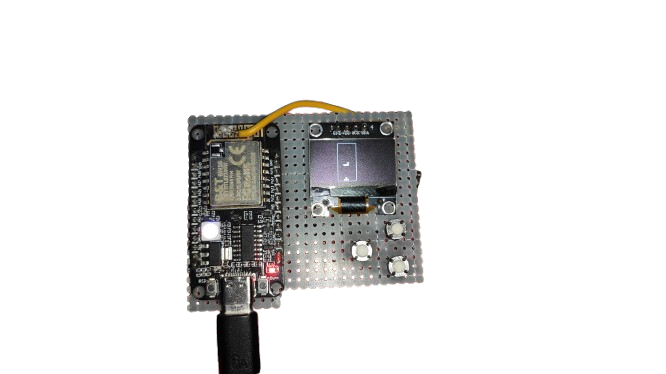

Key Features

Packet Monitor
Visualize WiFi activity with a real-time oscilloscope-style waveform on the OLED display.

Tetris Game
Play a classic Tetris game in portrait mode, controlled with three buttons.

WiFi Attacks
Perform single/all deauth and beacon attacks (use responsibly on authorized networks).